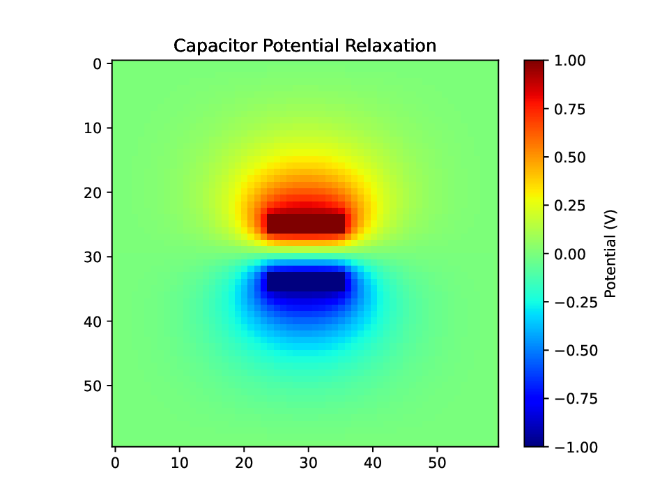

Cleanroom processing
Photolithography, wet etching (HF, HCl, BOE) and wire bonding at the UCSB Nanofab.
Read morePhysics B.S. 2027, UC Santa Barbara
Undergraduate Researcher, Mazur LabUC 산타바바라 물리학 학사 (2027년 졸업 예정)
Mazur Lab 학부 연구원
I am a senior in physics at UC Santa Barbara and an undergraduate researcher in Prof. Greg Mazur’s lab in the Materials Department. I process samples in the cleanroom, help measure them in a dilution refrigerator, and design the cryogenic hardware that holds them. I am applying to PhD programs for Fall 2027 to work on experimental condensed matter physics and quantum devices.UC 산타바바라 물리학과 4학년이며, 재료공학과 Greg Mazur 교수 연구실의 학부 연구원입니다. 클린룸에서 시료를 공정하고, 희석 냉동기 측정을 돕고, 시료를 고정하는 극저온 하드웨어를 설계합니다. 2027년 가을 학기 박사과정에 지원하고 있으며, 응집물질 실험물리와 양자 소자를 연구하고자 합니다.
Mazur Lab, UCSB Materials Department, since May 2026. Current project: testing whether amorphous vanadium silicide thin films superconduct.2026년 5월부터 UCSB 재료공학과 Mazur Lab에서 연구하고 있습니다. 현재 과제: 비정질 바나듐 실리사이드 박막이 초전도성을 보이는지 확인하는 것.
Photolithography, wet etching (HF, HCl, BOE) and wire bonding at the UCSB Nanofab.
Read moreCooldowns, wiring, and lock-in magnetotransport on Ge/SiGe Hall bars.
Read moreCopper cold fingers and a bottom-loader trolley, designed in Autodesk Fusion and machined in the shop.
Read moreIn Spring 2026 I was an Undergraduate Learning Assistant for PHYS 23, Introduction to Electromagnetism: three sections a week for 105 students, weekly office hours, and a three-hour review session before each exam. The same quarter, in PHYS 180 (Teaching Physics), I ran a survey study of how studying with AI affects the way students organize physics knowledge. I also mentor through the Society of Physics Students and run demonstrations at elementary school science nights with Physics Circus.2026년 봄 학기에 PHYS 23(전자기학 입문)의 학부 러닝 어시스턴트로 일했습니다. 매주 세 개 분반(총 105명)을 맡았고, 매주 오피스 아워를 열었으며, 시험 전마다 3시간 복습 세션을 진행했습니다. 같은 학기 PHYS 180(물리 교육) 수업에서는 AI를 활용한 공부가 학생들의 물리 지식 구조에 어떤 영향을 주는지 설문으로 조사했습니다. Society of Physics Students에서 멘토로 활동하고, Physics Circus와 함께 초등학교 과학의 밤 행사에서 시연도 하고 있습니다.

PHYS 20CL final project. I measured how high a ring jumps off a Thomson coil at ring temperatures from −196 °C to 148 °C. The colder the ring, the higher it jumped.
Learn More
PHYS 129L, scientific computing. I solved for the electric potential around two parallel plates on a grid by iterative relaxation.
Learn More